📑 文章目录（19 节）
本文将为大家带来 2022 年发售的海外制 IIDX 手台「PHOENIXWAN+」的评测。
如果你正在寻找用于 INFINITAS 或 BMS 的控制器，目前老实说就是它这一款唯一之选了。
与旧款的区别
为了照顾没时间细看的读者，先总结一下相较于旧款 Phoenixwan（2021 年 10 月 1 日版以前）的主要改动点：
- 连接线改为可拆卸式
- 面板与转盘贴纸（皿贴纸）的设计更新
- 音频灯效（Audio Light）部分的金属网格换为不易生锈的材质
- 亚克力下方的硬质底纸可拆卸与更换（可以自制痛台！）
- 转盘（皿）的最大灵敏度提升（3/288 → 1/288）
已经拥有旧款的玩家，整体改动并不足以让人专门再买一台新的。而且官方也为旧款推出了升级替换套件，如果具备自己动手更换的能力，可以考虑购买套件。
从下单到开箱及外观检查
这次是在 GAMO2 日本官网下单的。所有自定义选项均保持默认，购入价格为 39,800 日元（含税）。
截至撰稿时，受日元贬值影响，价格已上涨至 45,800 日元。
从下单到送到家中的时间线大致如下：
- 7 月 3 日 下单
- 7 月 11 日 收到发货通知
- 7 月 19 日 抵达国际互换局，被海关抽检扣留
- 7 月 22 日 收到海关寄来的通知明信片
- 7 月 25 日 将明信片与购买明细寄回海关
- 7 月 28 日 顺利送达家中
上次买旧款时大约两周就到了，这次因为被海关扣查，到货稍微晚了一些。
关于被海关扣查的具体情况后文会再提。正常周期下，建议按从下单到收货需要 2 周～1 个月来预估时间。
开箱与外观检查
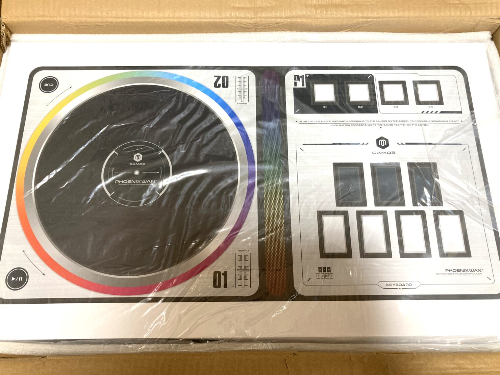
虽然包裹采用了外层纸箱加彩盒的厚实双层包装，但千万不要低估跨国物流的暴力程度。外箱毫无悬念地被摔得坑坑洼洼。
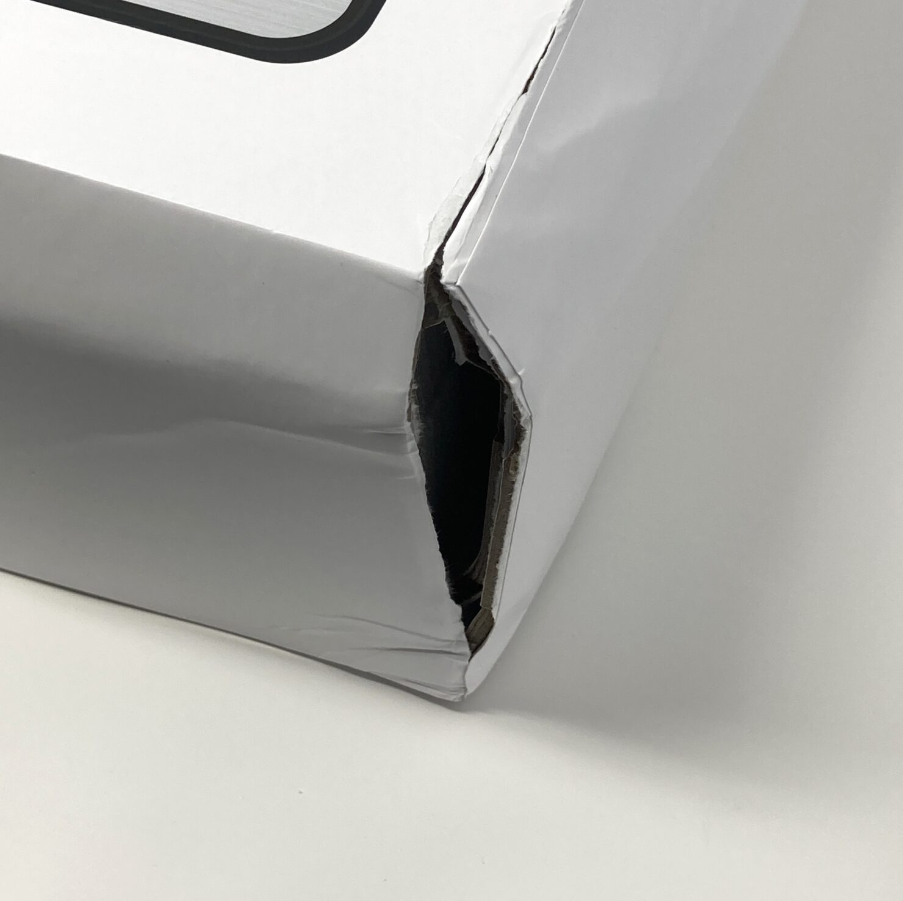
里面的彩盒也有让人看得心里发毛程度的破损。
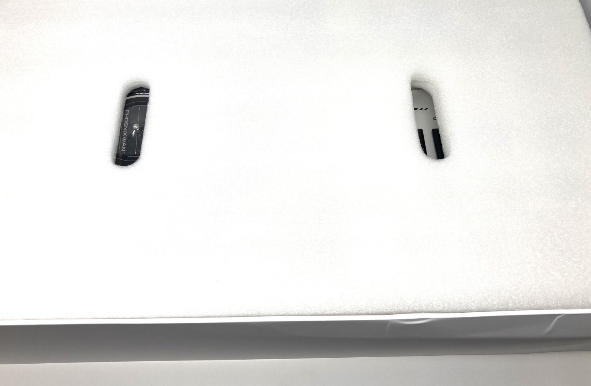
虽然彩盒内部有泡沫塑料保护，但还是完全没法让人安心。
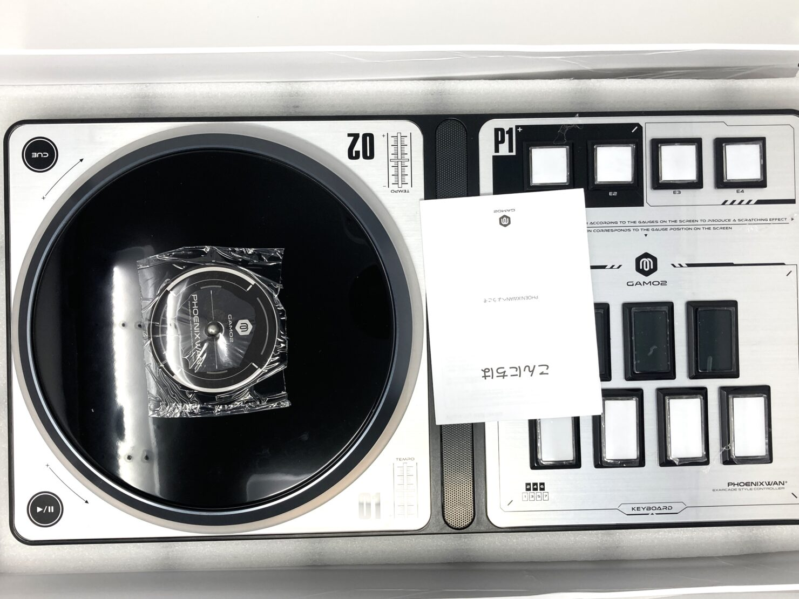
终于正式见面，看来机身本体平安无事。听说运气不好的话，运输途中可能会出现亚克力面板或机身碎裂的情况，所以收货后务必尽早开箱验货。
整体外观规格与旧款相差不大，但面板设计有所变更。个人其实更喜欢旧款简洁的风格，不过转盘贴纸还是新款设计更好看。
另外，中央的金属网罩（音频灯效部分）据说改用了不易生锈的材质。替换配件可以在下方链接购买。
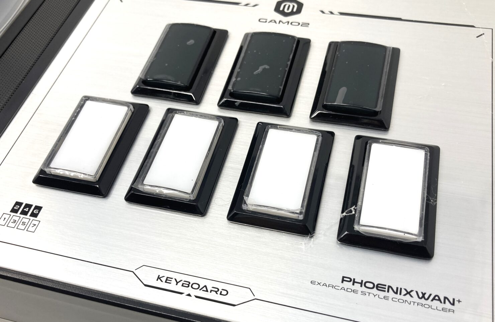
每个按键表面都单独贴有类似塑料薄膜的保护贴。
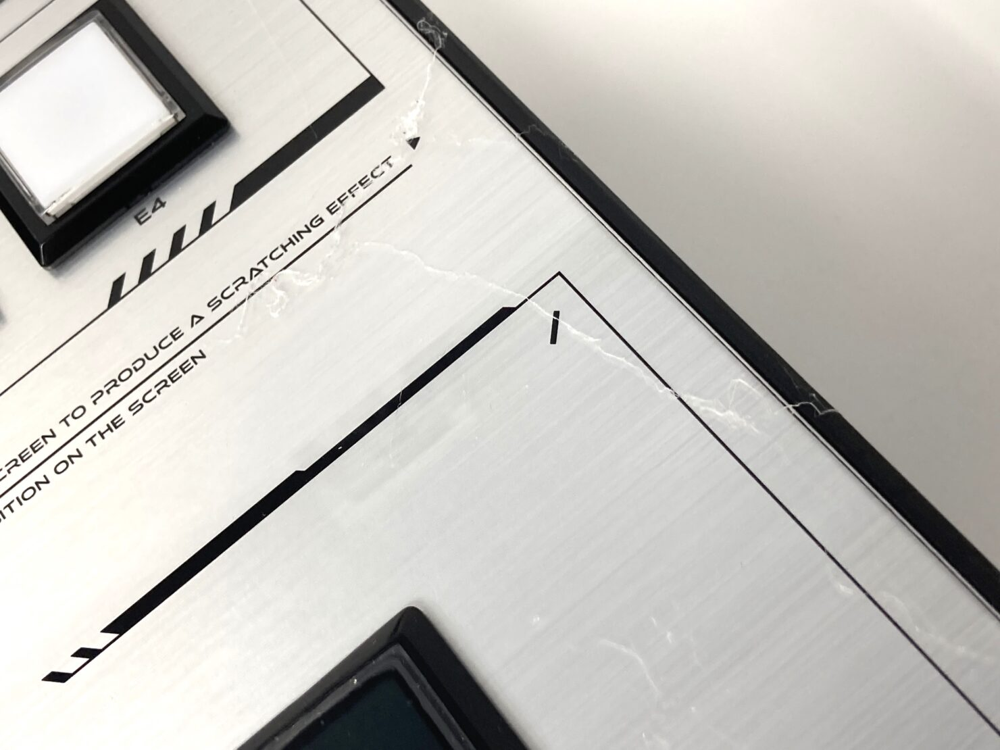
亚克力表面沾着不少类似残胶的痕迹。虽然没开裂也没有擦不掉的污渍还算万幸，但这种细节果然很有国产手台（海外代工）的做派。
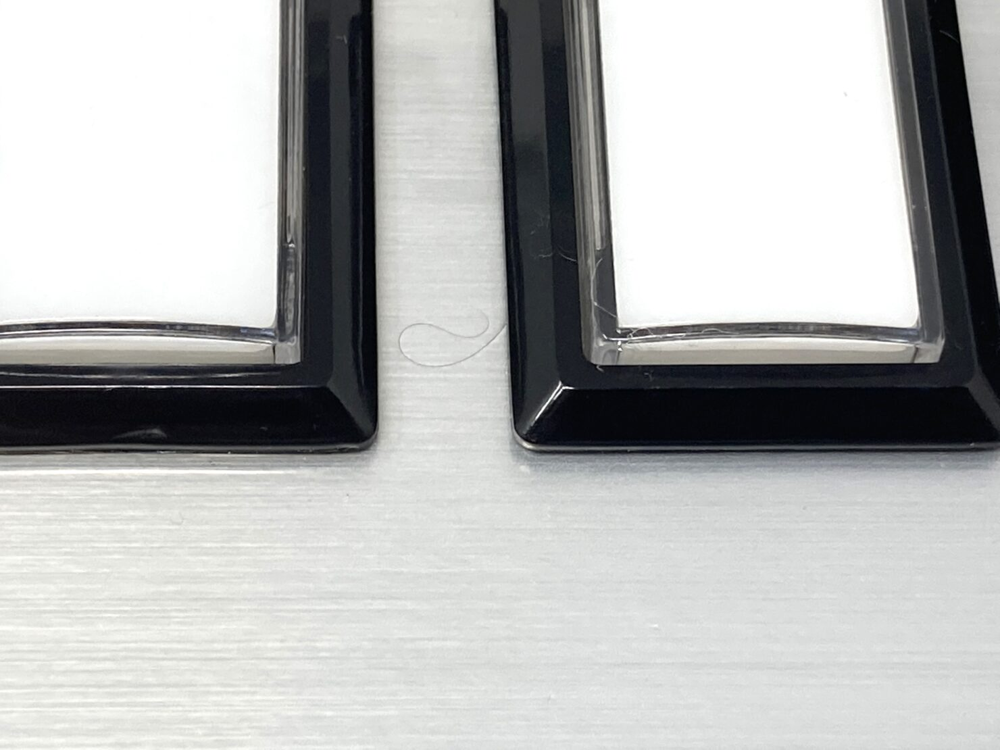
此外，操作面板的亚克力底下还夹进了一根类似头发的异物，清理起来看起来有点麻烦。
总体做工品质其实不错，但整机各处的小污渍和杂物还是比较显眼。
按键与转盘（皿）的使用手感测试
DAO 按键手感出奇地好
这次按键与微动开关，我选择了默认最便宜的组合（DJ DAO 按键 + Honeywell 微动开关 + 40g 弹簧）。（上一台买的是三和按键 + 欧姆龙微动开关）
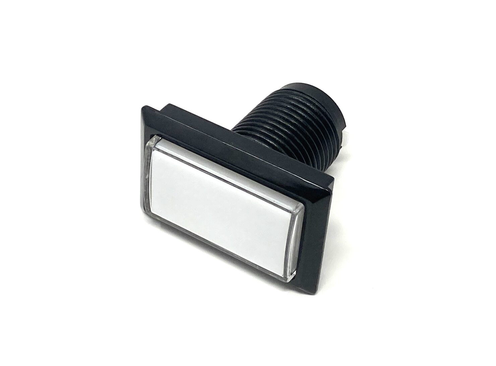
原本打算要是手感不满意就立刻换成三和按键和欧姆龙微动，但简单试打了一下之后觉得手感相当不错，决定先这样用一段时间。
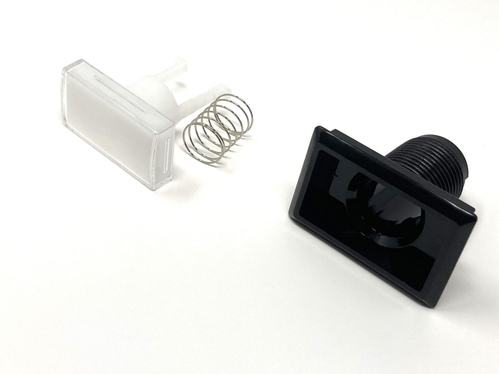
据说 DAO 按键的键程稍微深一点，但如果蒙眼盲测来区分三和和 DAO，其实很难猜出来。
甚至有种说法认为，在底座凹槽处（上图右侧）垫上橡胶片之类的材料就能同时实现静音改造和键程调节，这么看来 DAO 按键说不定反而更有优势。
弹簧（40g）与微动开关（0.15N）相比 Lightning Model（LM 框体）的标准配置（50g / 0.49N）略轻一些，但回弹非常扎实，纵连也很顺手，整体极其好打。
Honeywell 微动的咔嗒声稍微偏大一点，如果介意的话，只把微动开关选配成欧姆龙（D2MV-01-1C3）也完全可行。
顺带一提，CastHour 之后的 Lightning Model 框体似乎改用了同样是欧姆龙出品的「VX-01-1C23」。虽然触发力度同为 0.49N，但按压回馈感略有不同。
如果缺货也可以用 VX-01-1A3 代替。两者只是接线端子的孔径大小不同，可以正常使用。
50g 弹簧可以在乐天市场的三和电子官方店铺买到。
转盘（皿）感受不出和旧款的区别
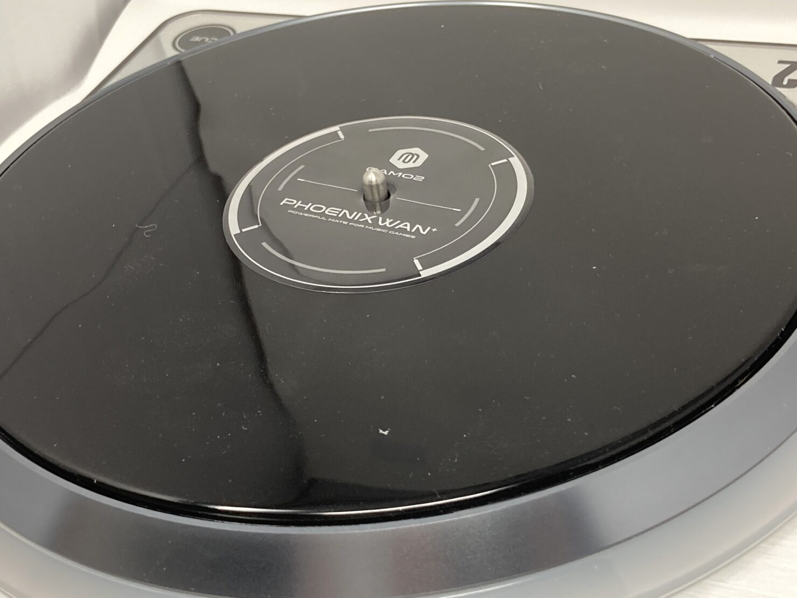
转盘和旧款一样，采用了类似橡胶与乙烯基结合的高防滑摩擦力材质。
虽然手感与 Lightning Model 框体或 EMP 盘不同，但不易打滑且打起来非常舒适，所以我打算保持原装继续使用。
充分利用 2017 年～2021 年间积累的技术经验，对制造工艺进行进一步改良，实现了更加顺滑的手感。
PHOENIXWAN+
官网虽然是这么写的，但实际用下来我完全感受不出和旧款有什么差别。
和旧款一样，容易沾灰、显脏以及留指纹依然是它的缺点。
连接方式与功能测试
PHOENIXWAN+ 仅支持 USB 连接。与旧款不同，无法直接连接 PS2 主机。
如果想玩 PS2 版家用机旧作，需要另行购买专用转接器「BE2PS」。
机身背面
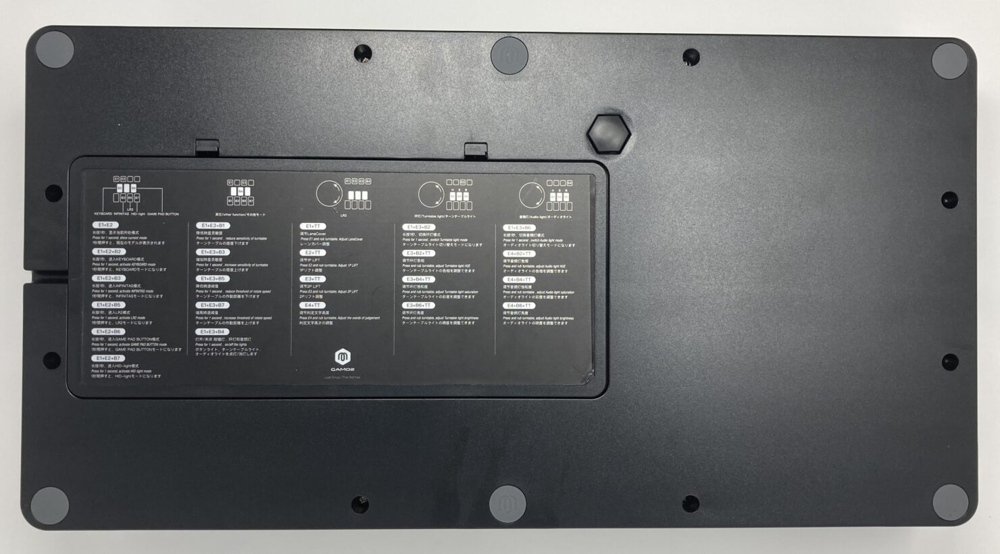
机身背面设有收纳线材的暗格，以及用于切换 1P/2P 侧的释放按钮。收纳仓盖子上印有模式切换等操作说明。
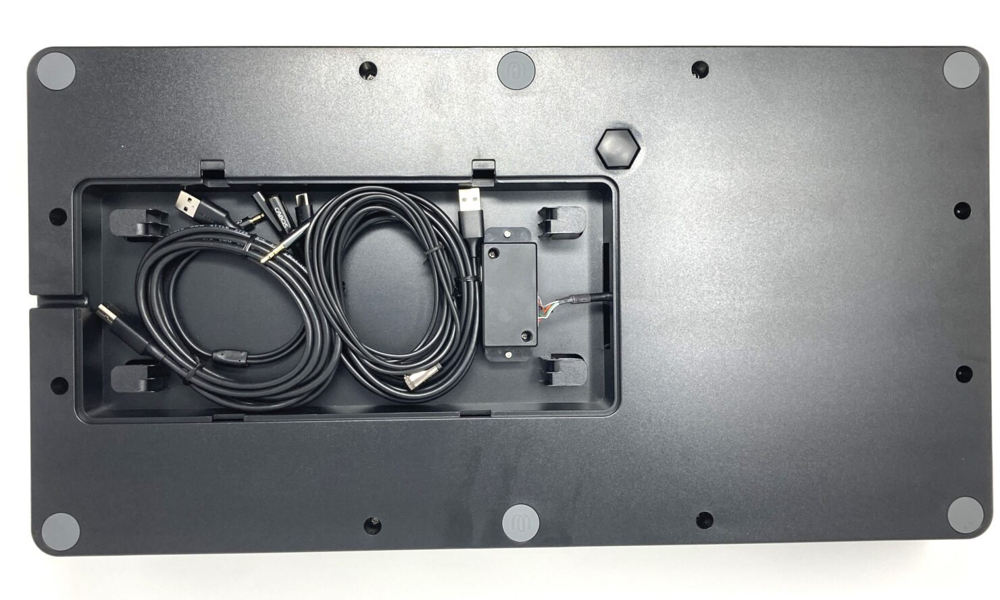
打开盖子后是这样的。这次的新款连主数据线也改为可拆卸设计了。记得旧款的线是没法拔下来的，这真是一处非常好的改进。
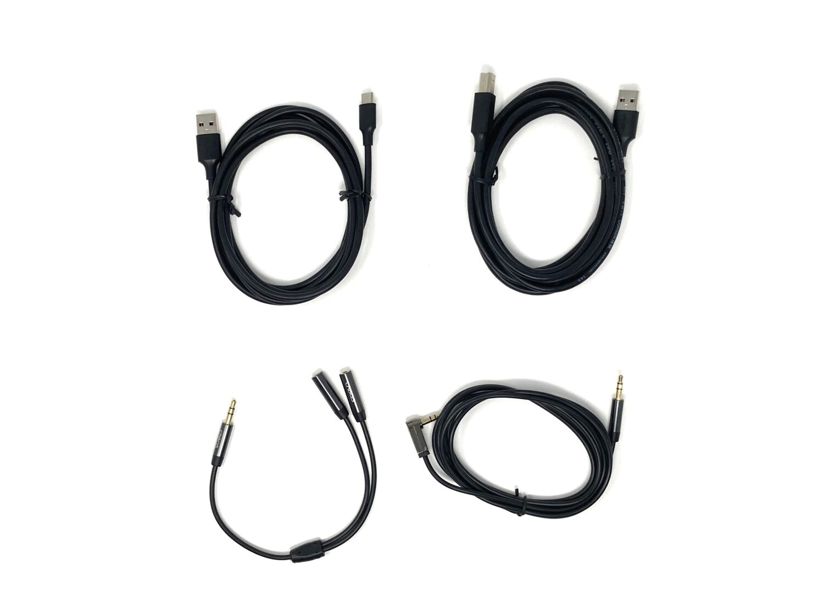
PHOENIXWAN+ 随机附带 4 根线材：
- USB-A ⇔ USB-C 线（LED 供电用）
- USB-A ⇔ USB-B 线（连接 PC 用）
- 立体声音频线
- 音频一分二转接线
两根 USB 线都是绿联（UGREEN）品牌，长度约 2m。连接 PC 用的那根线稍微粗一点，姑且还是能一眼分辨出来的。
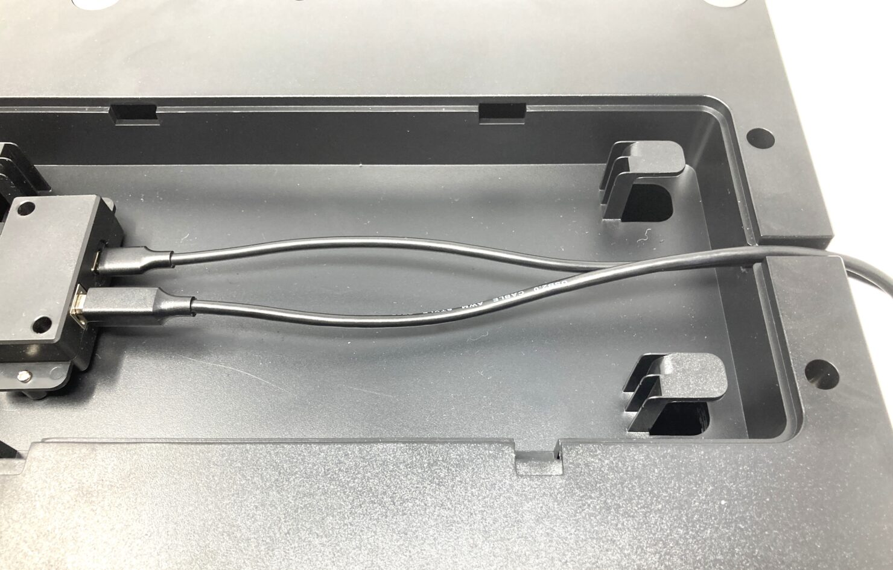
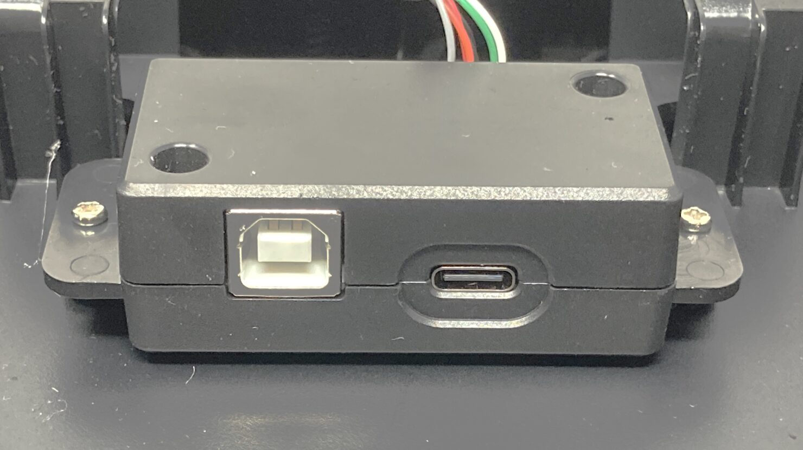
接口位置方面，图左（USB-A 端对应主接口）是连接 PC 用的，右侧（USB-C）是给转盘 LED 供电用的。不插 LED 供电线其实也能正常游玩。
另外，LED 供电线也可以不用插在电脑上，直接接手机充电头就能代替。
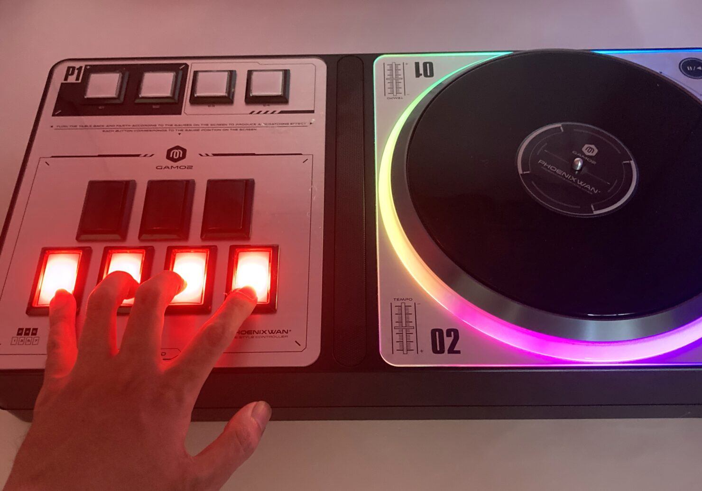
两根线都插上之后，转盘的 LED 会非常漂亮地亮起来。
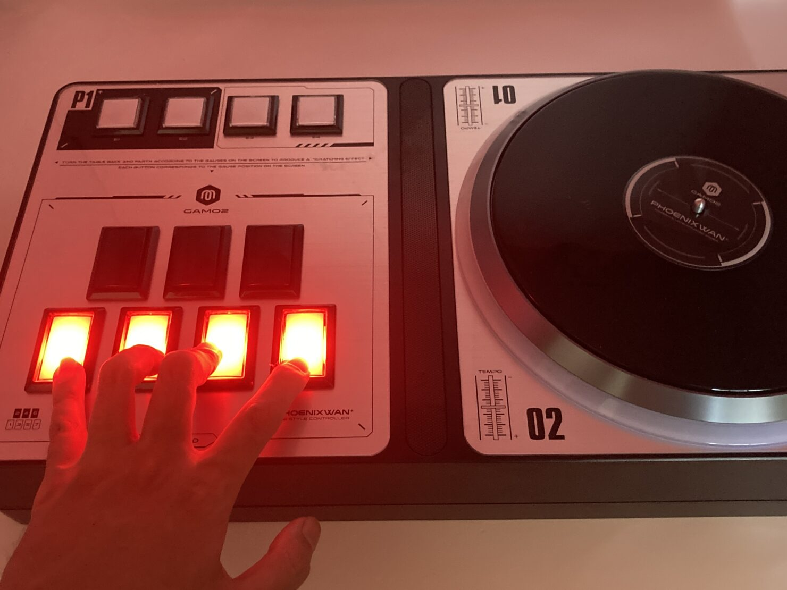
只插连接 PC 的那根线时，转盘 LED 不会亮，但完全可以正常游玩，而且键盘按键的灯光也没有变暗之类的情况。
自定义与日常维护
1P/2P 换边
PHOENIXWAN+ 的换边与维护极其简单。按下机身背面的按钮，操作面板就会微微弹起。这一点与旧款采用相同的结构。
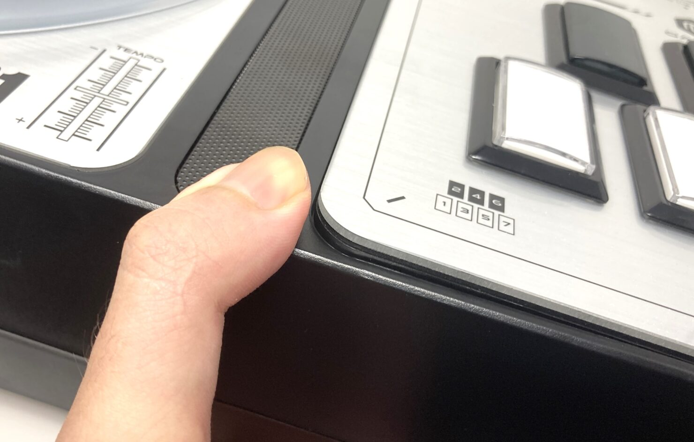
直接掀起来旋转 180 度再放回去就大功告成了。操作时注意别勾到内部排线导致断线。
操作面板是通过磁铁吸附固定的。
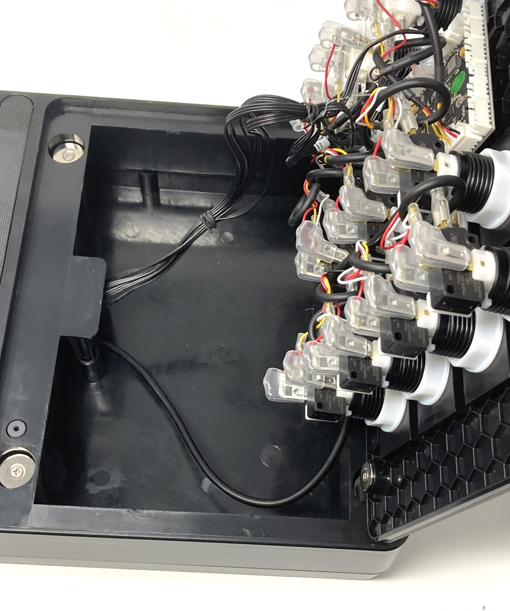
所有微动开关都采用了带释放卡扣、极易拔插的接线端子，无需工具即可轻松更换微动开关。
操作面板配色与外观自定义
把所有按键拆下来之后，可以取下亚克力下方的银色底纸变成暗黑风格，也可以夹入自己喜欢的插画做成痛台。
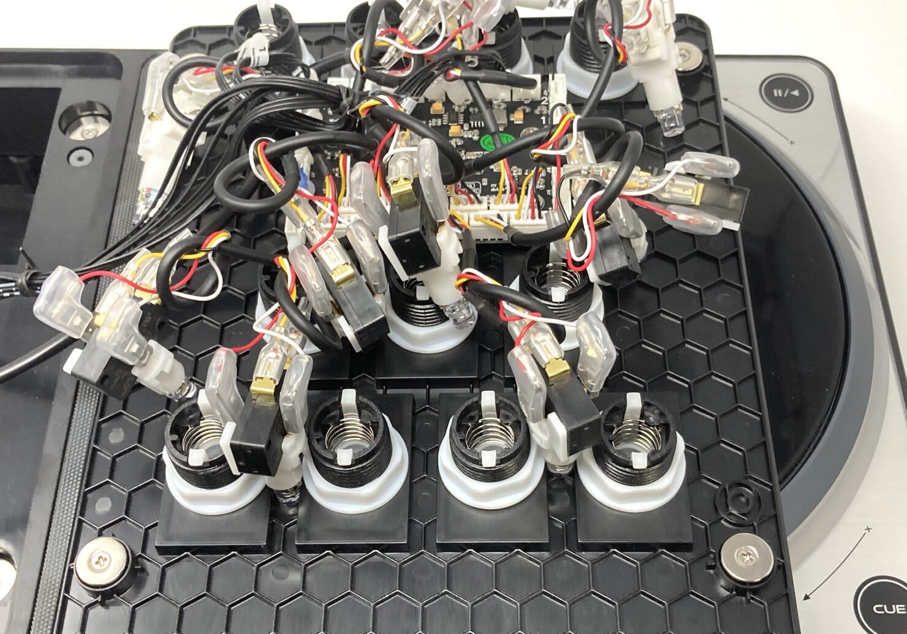
装回去的时候如果搞混了哪个开关对应哪个键位，可以参考下面这张图。

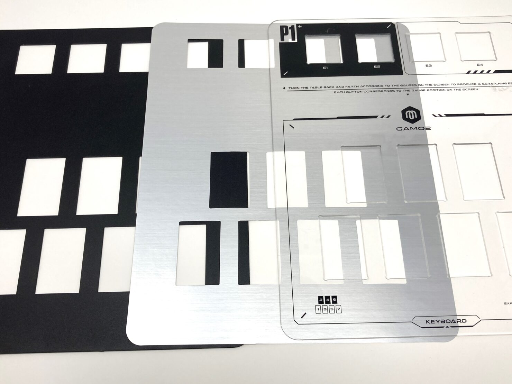
操作面板的叠层顺序依次为：本体（塑料）→ 金属板（黑色）→ 底纸（银色）→ 透明亚克力。金属板和亚克力如果抽掉的话，应该会对敲击手感产生影响。
官网提供了尺寸图纸可供下载，想要制作原创面板图案的玩家可以加以利用。
※操作面板本身的图案是印刷在亚克力上的，无法擦除。
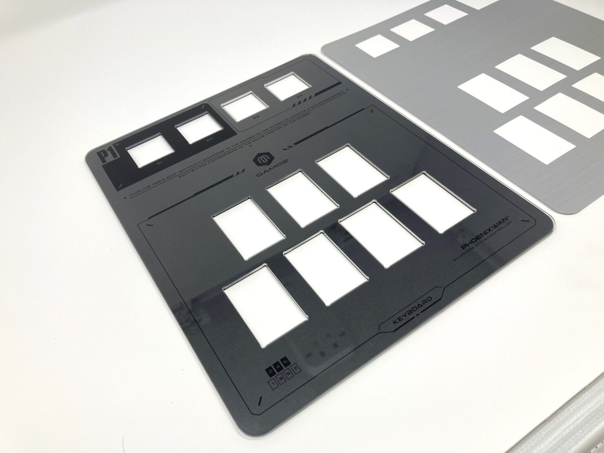
取下银色底纸后会呈现偏暗沉的质感，感觉这样也挺不错的。
转盘部分的拆解这次嫌麻烦就省略了。包含转盘部分在内的完整面板更换步骤在官网有详细图文说明，大家可以参考下方链接。
优点与不足之处
从购买、开箱到实际试玩体验下来，这台 PHOENIXWAN+ 让我觉得满意的地方与在意的问题总结如下：
- 几乎与街机一致的游玩手感
- DAO 按键品质与性价比都很出色
- 连接线改为可拆卸式
- 基本随时都能买到现货
- 按键敲击声较大，必须进行静音改造
- 发货与包装品控略显粗糙
- 偶尔会被海关抽查征税
默认的按键/弹簧/微动组合意外地出色
当然，如果你立志打职业之类的水准，那还是讲究一下 50g 弹簧和指定微动比较好，但绝大多数玩家选择默认配置就已经足够满意了。
我自己其实也算对弹簧和微动非常挑剔的“框体品鉴家”型玩家，这次是抱着“看看 DAO 按键到底是个什么水准”的心态特意没做任何选配直接下单的。
结果 DAO 按键的素质高到了让我忍不住感叹“这跟三和按键到底有什么区别？”的程度，完全觉得“根本没必要换了”。（不过微动开关我可能会趁着做静音改造的时候顺便换掉）
更换弹簧和微动本身完全不需要工具、非常轻松，所以购入时直接按默认配置买就完全没问题。
连接线改为可拆卸式
作为相对旧款的升级，取消了 PS2 接口，并将主线改为了可拆卸式。就个人而言，我认为这是非常赞的改进。
改为可拆卸后，万一出现断线或线长不够的情况，可以直接买市面上的通用线替换，日常收纳和走线也方便多了。
如果不需要转盘和音频灯效的 LED，只需一根 USB 线就能连接，这点也很贴心。果断砍掉 PS2 接口、改由另售转接器兼容的做法非常明智。
随时都能买得到
近年来 KONAMI 官方也推出过入门版专控（Entry Model）和专业版手台（Professional Model），但截至撰稿时均已停售。在二手平台 Mercari 上甚至能看到高于原价的溢价交易。
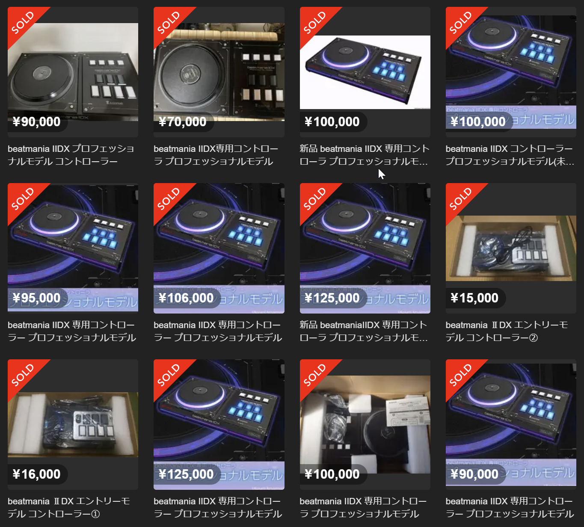
PHOENIXWAN+ 很棒的一点就在于基本常年有货，能够稳定买到。
尽管受日元贬值影响涨了些价，但不到 5 万日元就能获得接近街机的游玩体验，依然是非常超值的。
打键音相当吵，静音改造几乎是刚需
Phoenixwan 在海外手台里已经算偏安静的了，但不管是 DAO 按键还是三和按键，实际敲起来声音依然不小。
静音改造前的 Phoenixwan 也太吵了 pic.twitter.com/wW6PMNVQPo
— かみゆー (@kmy573) July 28, 2022
如果住在公寓楼里，可以说是必须做静音改造，而且还得注意游玩时间段的程度。
关于静音改造的方法我在下面这篇文章里做了详细讲解，欢迎参考。
担心运输途中的磕碰损坏
加上后文提到的海关问题，从中国发出的国际快递无疑是最大的痛点。海外物流对包裹哪管你是不是精密仪器，照样毫不客气地乱扔。
虽然我很幸运，至今在 GAMO2 买了三次东西都没遇到商品破损，但每次外纸箱都被摔得稀巴烂。如果真的遇到运输损坏或残次品，务必第一时间联系官方客服处理。
被海关扣查了
这次在 GAMO2 购物第一次被海关抽查扣留，缴纳了消费税、地方消费税及清关手续费共计约 2,300 日元。
一旦被海关扣查，收件人会收到一封通知明信片，大意是“无法确认包裹内物品金额，请寄送购买明细等凭证”。
如果不提交材料，包裹大约 1 个月后就会被退运，所以收到通知后请尽快处理。
关于关税与清关事项，GAMO2 官网的购物指南中也有说明。
总结
以上就是 PHOENIXWAN+ 的评测内容。虽然旧款 Phoenixwan 的完成度就已经相当高了，但这次升级后感觉用起来更加顺手了。
再次回顾一下相比旧款的主要改动：
- 连接线改为可拆卸式
- 面板与转盘贴纸的设计更新
- 音频灯效部分的金属网格换为不易生锈的材质
- 亚克力下方的硬质底纸可拆卸与更换（可以自制痛台！）
- 转盘的最大灵敏度提升（3/288 → 1/288）
转盘最大灵敏度的提升，老实说原本灵敏度就已经很高了，所以没太感受到明显差别；不过只需一根 USB 线就能连接且键盘依然发光，对我个人来说是极其贴心的升级。
虽然我自己没打算折腾，但更容易制作痛台这点也很加分。
不光是 Phoenixwan，只要住在公寓里，静音改造基本都是必备的。静音改造的具体方法请参考下方文章。